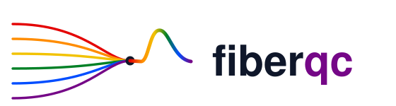

Is your fiber photometry result real, or an artifact of the
preprocessing choices you didn't know you were making?
The problem
Every analysis makes a chain of choices. Almost nobody checks them.
Before a fiber photometry recording becomes a result, it passes through a
string of decisions. Each is defensible. Each is somewhat arbitrary.
low-pass 2 or 10 Hz
bleaching double-exp or high-pass
motion OLS or robust
normalization dF/F or z-score
The field's own reference primer notes there is no systematic comparison of
these choices, and no established best practice.
Simpson, Akam, Patriarchi et al. — Neuron, 2024
What fiberqc does
Run the analysis through every reasonable pipeline, then say whether the
conclusion survives.
01You declare the
pipeline you actually ran.
02fiberqc runs the
same analysis through every defensible alternative.
03It reports where
your result sits — and how many alternatives disagree with it.
04Claude reads the
numbers back to you and tells you what to do about them.
Run on someone else's published data — DANDI:001340, Wilbrecht lab
8 of 15 reasonable alternatives reverse the
result.

Each dot is one complete analysis of the same recording.
Above the line, dopamine rises at reward.
Below it, dopamine falls.
The tool names the culprit: bleaching.
The same recording. The same event. One switch.
bleaching = double_exp
Dopamine rises
at reward
d = +0.50 · t = 8.5 · p = 8e-16
one choice
apart
↔
bleaching = highpass
Dopamine falls
at reward
d = −0.33 · t = −5.6 · p = 4e-08
Both are significant. Both are defensible. They cannot both be true.
The researcher asks the tool
> I found a significant dopamine response to reward. Should I publish this?
“No — not without resolving this first. The sign of your
effect is entirely an artifact of your bleaching-correction choice… Pick the
correction method on principled grounds, not by which gives the
result you want. The result isn't about your hypothesis — it's about your
preprocessing pipeline.”
Every statistic is computed in Python and handed to Claude as a fixed
number. Claude writes the interpretation, never the values — and the raw per-event
amplitudes behind each one ship with the report, so anyone can recompute them.
What running on real third-party data exposed
The tool found three serious bugs — in itself.
verdict
A result where half the pipelines found a significant
increase and half a significant decrease was being labelled
ROBUST. A QC tool marking a dangerous result as safe is
the worst failure it can have.
sampling gaps
A 140-second LED-off gap was being filtered as if it were
continuous signal. That step discontinuity rings through a 0.001 Hz high-pass
and inverts the measured response.
effect size
Only the t-statistic was reported. t = d·√n,
so a trivially small effect over many trials looks overwhelming. Magnitude now
leads; t is shown as the evidence for it, not as the effect.
Evidence
Not a demo. A package you can install.
3
independent labs
Akam · Lerner · Wilbrecht
27
tests, green on
Python 3.10–3.12
16
pipelines per run,
every one auditable
MIT
API docs, CI,
open source
Every reported number ships with the raw per-event
amplitudes behind it. Open the CSV, run the test yourself, get the same value.
fiberqc
Check the result before the reviewer does.